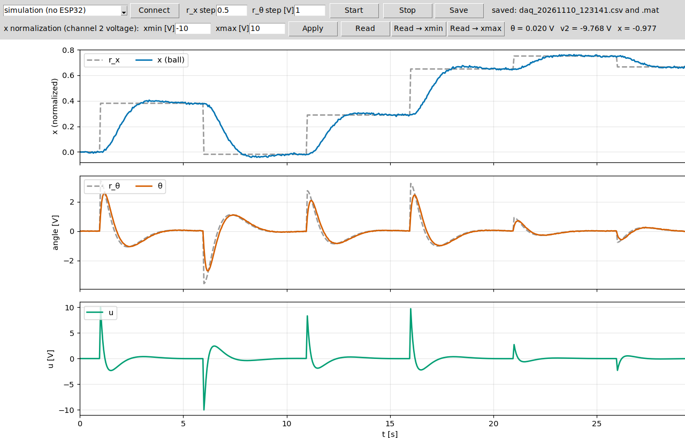

The firmware runs control software in real time on the ESP32, taking hardware constraints into account. The goal of the bench is to allow software-in-the-loop and hardware-in-the-loop, important steps in the development of any product that involves control software for physical systems.
The interface board bridges the ESP32 (3.3 V) and ±10 V systems: 2 inputs and 1 output of ±10 V, referenced to the same GND as the system.
2 inputs ±10 V1 output ±10 V 12-bit ADC12-bit PWM fixed sampling period
The circuit is split into two double-sided boards, with standard screw terminals (5.08 mm) and M3 mounting holes. The complete design (schematics, boards and results) is in the analog_circuits repository.
| Board | Function | Size | Connectors |
|---|---|---|---|
| A/B | 2 inputs (MCP6002), ESP32 sockets and output (TL072) | 74 × 72 mm | J1: VIN1, VIN2, VOUT, GND; J3: +15 V, GND, −15 V |
| C | ±15 V supply | 48 × 52 mm | J3: ±15 V and GND; JP: +5 V and GND; MT and LM: wires to the modules; test points |
The ESP32 DevKit plugs into two 1 × 15 sockets (D18 = PWM, D34 = A0, D35 = A1, 3V3, GND). The VIN pin of the ESP32 is not used.
Interactive 3D models: drag to rotate, use the mouse wheel (or pinch) to zoom and right-drag to pan. Component colors are illustrative (by component type).
| Input (VIN1 and VIN2) | Output (VOUT) | |
|---|---|---|
| Pin | GPIO34 and GPIO35 (12-bit ADC, 11 dB attenuation) | GPIO18 (12-bit PWM, 19.5 kHz) |
| Conversion | $V_{in} = (V_{A0} - 1.5167)/0.08388$ (cal_board.h) | $V_{out} = 10.629\,u - 0.045$, with $u \in [-1, 1]$ |
| Resolution | ≈ 9.7 mV per count | ≈ 5.2 mV per step |
| Reading | trimmed mean of several readings per sample | dac_apply(u) writes the PWM duty |
| Range | ±10 V (protected up to ±30 V) | ±10 V |
cal_board.h, used by the firmware.
The firmware (Arduino-ESP32 3.x) reads the two inputs, computes the control law and writes the output every
$T_s = 50$ ms, with a fixed period. It is suggested to edit only firmware/esp32_daq/control.h.
| Signal | Pin | Range |
|---|---|---|
| VIN1 (input 1) | GPIO34 | ±10 V |
| VIN2 (input 2) | GPIO35 | ±10 V |
| VOUT (output) | GPIO18 (PWM → filter → amplifier) | ±10 V |
| GND | common |
G command.# flash with arduino-cli + esp32:esp32 core 3.x (or: Arduino IDE, board "ESP32 Dev Module")
./flash.sh /dev/ttyUSB0 # Windows: flash.bat COM5
# HMI
pip install -r hmi/requirements.txt
python hmi/hmi.py # or: python hmi/hmi.py --port COM5
If the upload fails, hold the BOOT button of the board when the flashing starts. In the HMI, choose the port,
click Connect, set the steps and click Start (ESC or Stop
zeroes the output). At the end of each run the data are saved in hmi/data/daq_YYYYMMDD_HHMMSS.csv and
.mat (t, r_x, r_theta, x, theta, u, Ts, mode).
The operating modes (MODE), the position reference (REF_SEQ), the input
normalization, the serial commands and the data format are described in the comments of control.h
and esp32_daq.ino.
The Python HMI talks to the ESP32 over the serial port: it starts and stops the run, shows the signals live
and saves the data (.csv and .mat) at the end of each run.

python hmi/hmi.py --demo), without the ESP32: reference rx and position x, reference rθ and angle θ, and control signal u.